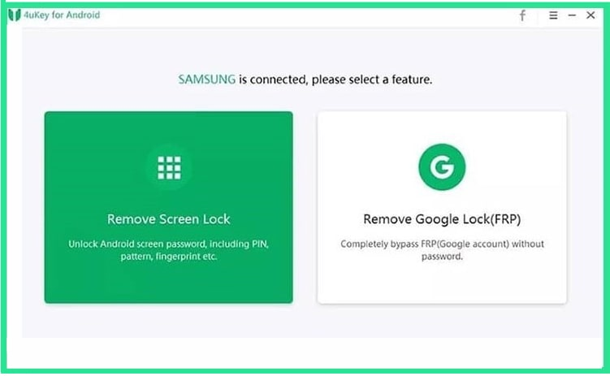
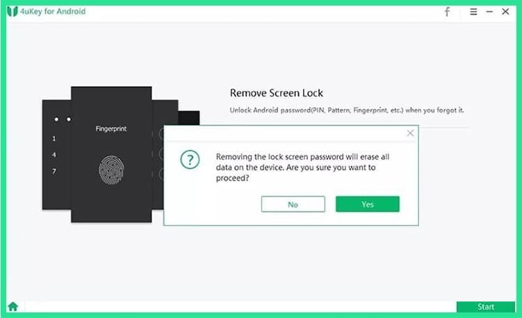
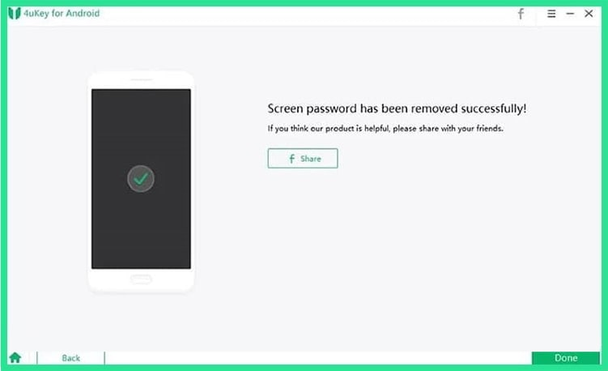

Tenorshare 4uKey for Android is easy to use Android unlocking software that involves very few steps in the process. It is specially designed for Samsung mobiles and supports almost all the models of it. It can remove password, PIN pattern, and fingerprint locks on the screen, and including this, it can also delete the FRP lock. Tenorshare primarily supports Samsung models, and other than that, the Android devices with a version between 8.1 & 1.0 may also get unlocked using it. The system requirements are Windows OS (10 to XP) with processor 1 GHz and 1 GB RAM. With a trial version available, the tool is purchasable in multiple price ranges on a Monthly, Yearly, or Lifetime basis.
(1)It supports Windows 10/8.1/8/7/Vista/XP operating system, with a 1 GHz processor & 1024 MB RAM.(2)It can remove four lock types on Android mobiles (password, PIN pattern, and fingerprint locks).(3)It can altogether remove the FRP lock from the mobile.(4)It is compatible with mobiles having Android version 1.0 to 8.1.(5)The paid version is available in many different price ranges licensing multiple numbers of devices.(6)Thirty days money-back guarantee on all purchases.
(1)It gives many variations of package customization for buying.(2)It is compatible with the latest Samsung mobiles.(3)It provides 30 days money-back guarantee.
(1)It does not support Mac computers for installation.(2)The software is not updated to unlock the Android versions above8.1.(3)For smooth running, it requires 1 GB RAM.(4)It does not have any provision to save the data after removing the lock.
Applying Tenorshare 4uKey for Android as an Android pattern unlock tool is quick and straightforward. The process involves fewer steps, and once the software matches its compatibility with the mobile, it works fast in removing the screen lock, may it be of any type. Download and install the tool on your PC and go through the method given below to instantly unlock your Android.

Step 1:Start the program after installation, and on the first screen, choose the option “Remove Screen Lock.
Step 2:Connect the locked mobile to the PC via USB cable.
Step 3:On the next page, hit the “Start” button to initiate the process.

Step 4:A pop screen appears, which asks for permission to unlock with the consent of the data erase on the device. Click the “Yes” button to start.

The process of lock removing takes a few minutes and delivers to you the fully accessible mobile phone without a password.